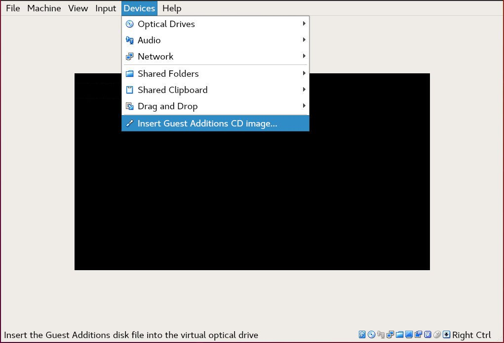

如何在 Debian 10 Linux 上安装 VirtualBox 增强功能
VirtualBox 是一个开源的，跨平台的虚拟化软件，可让您同时运行多个客户机操作系统(虚拟机)。
VirtualBox 提供了一组驱动程序和应用程序 (VirtualBox 增强功能) ，可以将其安装在客户机操作系统中。
VirtualBox 增强功能为客户机提供了一些有用的功能，例如共享文件夹，共享剪贴板，鼠标指针集成，更好的视频支持等等。
本文介绍了如何在 Debian 10 VirtualBox 虚拟机上安装 VirtualBox 增强功能 。
在 Debian Guest 上安装 Guest Additions
VirtualBox 附带一个名为 “VBoxGuestAdditions.iso” 的映像 ISO 文件，其中包含所有受支持的客户机操作系统的客户机附加安装程序。该文件位于主机上，可以使用 VirtualBox GUI 管理器安装在客户机上。挂载后，您可以在客户机系统上安装附加组件。
请按照以下步骤在 Debian 桌面或服务器 guest 虚拟机上安装 VirtualBox guest 虚拟机。
-
打开 VirtualBox GUI 管理器。
-
启动 Debian 客户机虚拟机。
-
以 root 或 sudo 用户身份登录到客户机，并安装构建内核模块所需的软件包：
sudo apt update sudo apt install build-essential dkms linux-headers-$(uname -r)$(uname -r)显示正在运行的内核版本。 -
在虚拟机菜单上，单击 『设备』 -> 『Insert Guest Additions CD Image』，如下图所示：

如果收到错误消息，说客户机系统没有 CD-ROM ，请停止虚拟机，然后打开计算机设置。转到“存储”选项卡，然后通过单击加号(添加光学设备)来添加新的 CD-ROM 设备。完成后，重新引导虚拟机。
-
打开 Debian 客户机终端，创建一个新目录，然后挂载 ISO 文件：
sudo mkdir -p /mnt/cdrom sudo mount /dev/cdrom /mnt/cdrom -
导航到目录并执行
VBoxLinuxAdditions.run脚本以安装 VirtualBox 增强功能：
```sh
cd /mnt/cdrom
sudo sh ./VBoxLinuxAdditions.run --nox11
```
`--nox11` 选项告诉安装程序不要生成 xterm 窗口。
输出将如下所示：
```txt
Verifying archive integrity... All good.
Uncompressing VirtualBox 6.0.16 Guest Additions for Linux........
...
...
VirtualBox Guest Additions: Starting.
```
-
重新启动 Debian guest 虚拟机，以使更改生效：
sudo shutdown -r now -
引导虚拟机后，登录到虚拟机并验证安装是否成功，并使用以下
lsmod命令加载内核模块：lsmod | grep vboxguest输出将如下所示：
vboxguest 348160 2 vboxsf如果该命令未返回任何输出，则表示未加载 VirtualBox 内核模块。
现在，您已在 Debian 客户机上安装了 VirtualBox 增强功能 。
现在，您可以从虚拟机设置的“存储”选项卡中启用“共享剪贴板”和“拖放”支持，从“显示”选项卡中启用 3D 加速，创建“共享”文件夹等等。
结论
安装 VirtualBox 增强功能 可提高虚拟机的性能并增强其可用性。
要查找有关 VirtualBox 增强功能的更多信息，请访问正式的 VirtualBox VirtualBox 增强功能文档页面。